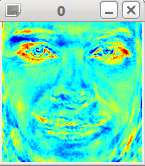

Gender Classification with OpenCV (and libfacerec)¶
Introduction¶
A lot of people interested in face recognition are also interested in gender classification. In this tutorial you’ll learn how to perform gender classification with OpenCV and libfacerec.
Prerequisites¶
First of all you’ll need some sample images of male and female faces. I have decided to search celebrity faces using Google Images with the faces filter turned on (my god, they have great algorithms at Google!).
My database has 8 male and 5 female subjects, each with 10 images. Here are the names if you aren’t that creative:
- Angelina Jolie
- Arnold Schwarzenegger
- Brad Pitt
- Emma Watson
- George Clooney
- Jennifer Lopez
- Johnny Depp
- Justin Timberlake
- Katy Perry
- Keanu Reeves
- Naomi Watts
- Patrick Stewart
- Tom Cruise
All images were chosen to have a frontal face perspective, were aligned at the eyes and have been cropped to equal size, just like this set of George Clooney images:

Choice of Algorithm¶
If we want to decide wether a person is male or female, we must use a class-specific method, in order to learn the discriminative features of both classes. The Eigenfaces method is based on a Principal Component Analysis, which is an unsupervised method, hence it is not suited for this task.
The Fisherfaces method instead yields a class-specific linear projection, so it is better suited for the gender classification task. The Fisherfaces method actually performs very good. You can read my writeup on this at http://www.bytefish.de/blog/gender_classification.
Please let me give a short summary of the results.
For a subject-dependent cross-validation the Fisherfaces method yields a 99% recognition rate on my preprocessed dataset. A subject-dependent cross-validation simply means, images of the subject under test were also included in the training set (different images of the same person). So these figures may be misleading, because the method still may find the nearest distance to the person under test and its associated gender; instead of finding the closest gender.
If you are evaluating algorithms for let’s say gender or emotion classification, then always make sure to use a subject-independent cross-validation. Never use any of the images of a person under test for training, but use all images of this person only for testing. I mention this here, because I’ve seen papers reporting about awesome accuracy in Emotion classification, when all they did was a subject-dependent cross-validation.
However, back to our problem. A subject-independent cross validation still yields a 98% recognition rate for the Fisherfaces. That means, that this algorithm is great for gender classification; as long as your input data is accurately aligned.
gender.txt¶
In the code I will read the images from a CSV file gender.txt, which looks like this for my sample images:
/home/philipp/facerec/data/gender/male/crop_keanu_reeves/keanu_reeves_01.jpg;0
/home/philipp/facerec/data/gender/male/crop_keanu_reeves/keanu_reeves_02.jpg;0
/home/philipp/facerec/data/gender/male/crop_keanu_reeves/keanu_reeves_03.jpg;0
...
/home/philipp/facerec/data/gender/female/crop_katy_perry/katy_perry_01.jpg;1
/home/philipp/facerec/data/gender/female/crop_katy_perry/katy_perry_02.jpg;1
/home/philipp/facerec/data/gender/female/crop_katy_perry/katy_perry_03.jpg;1
...
/home/philipp/facerec/data/gender/male/crop_brad_pitt/brad_pitt_01.jpg;0
/home/philipp/facerec/data/gender/male/crop_brad_pitt/brad_pitt_02.jpg;0
/home/philipp/facerec/data/gender/male/crop_brad_pitt/brad_pitt_03.jpg;0
...
/home/philipp/facerec/data/gender/female/crop_emma_watson/emma_watson_08.jpg;1
/home/philipp/facerec/data/gender/female/crop_emma_watson/emma_watson_02.jpg;1
/home/philipp/facerec/data/gender/female/crop_emma_watson/emma_watson_03.jpg;1
You see were this leads to. The label 0 is the class male and label 1 is for female subjects.
Source Code¶
#include "opencv2/opencv.hpp"
#include "opencv2/highgui/highgui.hpp"
#include <iostream>
#include <fstream>
#include <sstream>
#include "facerec.hpp"
using namespace cv;
using namespace std;
void read_csv(const string& filename, vector<Mat>& images, vector<int>& labels, char separator = ';') {
std::ifstream file(filename.c_str(), ifstream::in);
if (!file)
throw std::exception();
string line, path, classlabel;
while (getline(file, line)) {
stringstream liness(line);
getline(liness, path, separator);
getline(liness, classlabel);
images.push_back(imread(path,0));
labels.push_back(atoi(classlabel.c_str()));
}
}
int main(int argc, const char *argv[]) {
// check for command line arguments
if (argc != 2) {
cout << "usage: " << argv[0] << " <csv.ext>" << endl;
exit(1);
}
// path to your CSV
string fn_csv = string(argv[1]);
// images and corresponding labels
vector<Mat> images;
vector<int> labels;
// read in the data
try {
read_csv(fn_csv, images, labels);
} catch (exception& e) {
cerr << "Error opening file \"" << fn_csv << "\"." << endl;
exit(1);
}
// get width and height
int width = images[0].cols;
int height = images[0].rows;
// get test instances
Mat testSample = images[images.size() - 1];
int testLabel = labels[labels.size() - 1];
// ... and delete last element
images.pop_back();
labels.pop_back();
// build the Fisherfaces model
Fisherfaces model(images, labels);
// test model
int predicted = model.predict(testSample);
cout << "predicted class = " << predicted << endl;
cout << "actual class = " << testLabel << endl;
// get the eigenvectors
Mat W = model.eigenvectors();
// show first 10 fisherfaces
for (int i = 0; i < min(10, W.cols); i++) {
// get eigenvector #i
Mat ev = W.col(i).clone();
// reshape to original site
Mat grayscale = toGrayscale(ev.reshape(1, height));
// show image (with Jet colormap)
imshow(num2str(i), grayscale, colormap::Jet());
}
waitKey(0);
return 0;
}
Results¶
If you run the program with your gender.txt, you’ll see the Fisherface that best separates male and female images:
and the prediction should yield the correct gender:
predicted class = 1
actual class = 1